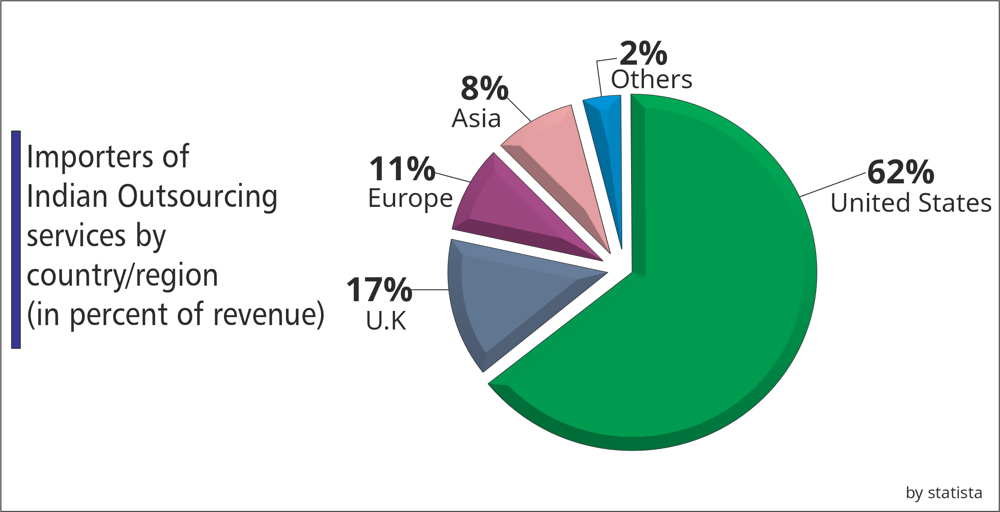

India's Outsourcing Market Share: Global Leadership & Growth Analysis
2025
India has a thriving IT sector and has gained a rightful position in the international market because of
strong government backing, an English-language educational system, and an abundance of skilled workers. The
talented and reasonably priced labor force in India is one of the primary drivers of the outsourcing
industry's expansion. India is well-known on the international scene for providing top-notch IT outsourcing
services that meet the needs of major corporations in North America and Europe. India is currently among the
world's most popular outsourcing locations.
Indian IT Outsourcing Services: Overview and Statistics
The Indian outsourcing Industry created many high-paying jobs for skilled workers and played a major role in
the growth of the Indian economy. Many companies favor India for outsourcing because of its highly skilled
workforce and cost efficiency.
India is the global leader in IT and BPO outsourcing, generating $177 billion in revenue in 2022 and
projected to reach $350 billion by 2025.
The United States is India's biggest client, with 59% of American companies outsourcing to India.

India is expected to have the highest number of software developers by
2024, surpassing even the US.
65% of outsourced IT functions involve software application development.
The Indian IT outsourcing Industry employs over 10 million people in India and is expected to create 4
million new jobs by 2025.
The Indian IT outsourcing Industry is projected to grow at 7.45% CAGR
(Compound Annual Growth Rate) by 2025.
Reasons why many companies consider India as a top destination for their IT needs outsourcing:
- Cost efficient: India has established itself as the IT outsourcing hub
because of cost-effective IT solutions, including development, maintenance, and support. Labor costs in
India are comparatively lower than in many Western countries, Which provides companies with significant
savings.
- Skilled Workforce: As per the statistics, India will have the most number
of developers by 2025, even more than the US. India has a large pool of highly skilled and professional
workforce. The workforce is proficient in various technologies and programming languages.
- English Proficiency: English is widely used and spoken in the business
environment in India and it is a must-have skill in some companies to get a job. This English-speaking
environment minimizes language barriers and leads to proper communication with clients and outsourcing
teams
- Global Quality Standards: IT companies in India adhere to global quality
standards and certifications. Indian companies prioritize great quality work, commitment to deadlines,
and meeting global quality standards.
- Time Zone Advantage: India's timezone advantage is one of its key strengths
in the outsourcing industry. The time difference between India and the east coast of the USA is 12.5
hours, for example, this allows businesses to extend their work hours by leveraging the Indian workforce
during their "off-hours".
- Experience in Global Projects: Indian IT firms have extensive experience in
global IT projects. This diversity allows them to cater to a wider range of global clients. This
exposure to a variety of projects develops problem-solving capabilities and adaptability.
- Government Support: The Indian IT sector has the strong backing of the
government, which has implemented a series of strategic initiatives to promote the sector. The
government offers tax benefits for companies operating in Special Economic Zones(SEZs, and financial
assistance for setting up infrastructure and skill development programs. The government's ambitious
Digital India program aims to create a robust digital infrastructure across the country, with improved
internet connectivity, data centers, and cyber security measures.
- Cultural Compatibility: Indian professionals often share a similar work
culture with Western clients. It helps in effective collaboration and understanding.
- Security precautions: Data security and confidentiality are top priorities for Indian IT
companies. Numerous Indian IT companies adhere to global security protocols, including ISO 27001 and SOC
2. These guidelines offer a structure for putting in place and preserving security measures that
safeguard client information.
- Scalability: The Indian IT service industry has always been known for its highly skilled
workforce and vast talent pool. But what sets them apart is their commitment to continuous skill
development, ensuring their clients stay ahead of the curve.